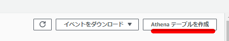
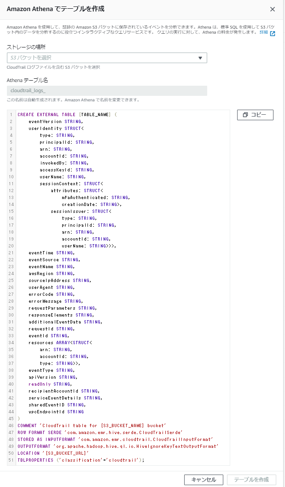
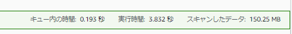

AthenaでCloudTrail の証跡を分析
CloudTrailのマネージメントコンソール上には「Athenaテーブルを作成」という機能がある。ここからAthenaで検索ができるようにDDLを用意してくれているが、これに落とし穴があった。S3上のファイル自体は日付ごとに格納されてパーティション化されているが、このDDL定義がパーティションに対応していない。余計なコストを発生させないために、Partition Projectionに対応したDDLを別途用意する必要がある。


Athenaでテーブルを作成する
- 【全リージョン対応】CloudTrailのログをAthenaのPartition Projectionなテーブルで作る | DevelopersIO
- Athenaのパーティションプロジェクションを利用してCloudTrailのログ検索をする - サーバーワークスエンジニアブログ
drop table cloudtrail_logs;
CREATE EXTERNAL TABLE cloudtrail_logs (
eventVersion STRING,
userIdentity STRUCT<
type: STRING,
principalId: STRING,
arn: STRING,
accountId: STRING,
invokedBy: STRING,
accessKeyId: STRING,
userName: STRING,
sessionContext: STRUCT<
attributes: STRUCT<
mfaAuthenticated: STRING,
creationDate: STRING>,
sessionIssuer: STRUCT<
type: STRING,
principalId: STRING,
arn: STRING,
accountId: STRING,
userName: STRING>>>,
eventTime STRING,
eventSource STRING,
eventName STRING,
awsRegion STRING,
sourceIpAddress STRING,
userAgent STRING,
errorCode STRING,
errorMessage STRING,
requestParameters STRING,
responseElements STRING,
additionalEventData STRING,
requestId STRING,
eventId STRING,
resources ARRAY<STRUCT<
arn: STRING,
accountId: STRING,
type: STRING>>,
eventType STRING,
apiVersion STRING,
readOnly STRING,
recipientAccountId STRING,
serviceEventDetails STRING,
sharedEventID STRING,
vpcEndpointId STRING
)
COMMENT 'CloudTrail table for ${BucketName} bucket'
PARTITIONED BY (region string, date string)
ROW FORMAT SERDE 'com.amazon.emr.hive.serde.CloudTrailSerde'
STORED AS INPUTFORMAT 'com.amazon.emr.cloudtrail.CloudTrailInputFormat'
OUTPUTFORMAT 'org.apache.hadoop.hive.ql.io.HiveIgnoreKeyTextOutputFormat'
LOCATION 's3://z3-cloudtrail/AWSLogs/<Acclout ID>/CloudTrail/'
TBLPROPERTIES (
'projection.enabled' = 'true',
'projection.date.type' = 'date',
'projection.date.range' = 'NOW-1YEARS,NOW',
'projection.date.format' = 'yyyy/MM/dd',
'projection.date.interval' = '1',
'projection.date.interval.unit' = 'DAYS',
'projection.region.type' = 'enum',
'projection.region.values'='us-east-1,us-east-2,us-west-1,us-west-2,af-south-1,ap-east-1,ap-south-1,ap-northeast-2,ap-southeast-1,ap-southeast-2,ap-northeast-1,ca-central-1,eu-central-1,eu-west-1,eu-west-2,eu-south-1,eu-west-3,eu-north-1,me-south-1,sa-east-1',
'storage.location.template' = 's3://z3-cloudtrail/AWSLogs/<Acclout ID>/CloudTrail/${region}/${date}',
'classification'='cloudtrail',
'compressionType'='gzip',
'typeOfData'='file',
'classification'='cloudtrail'
);
分析クエリの発行
東京リージョンで2021年11月に発行されたAPIでeventsource、eventnameごとに集計する
SELECT
awsregion,
eventsource,
eventname,
COUNT(*) as cnt
FROM
cloudtrail_logs
WHERE
date>='2021/11/01' AND
region = 'ap-northeast-1'
GROUP BY
awsregion,
eventsource,
eventname
ORDER BY cnt DESC
limit 10;
実行時間も全量検索に比べて高速化している。スキャンしたデータも一部分のみ。

関連しているかもしれない記事
- AthenaをCLIベースで実行する（AWS CLI、athenacli）
- ALB(Application Load Balancer)のログをAthenaで分析
- Redshift SpectrumからGlue Data Catalogのテーブルを参照する
- awswranglerを使用してCSV to Parquet
- Redshift Spectrumのベストプラクティス